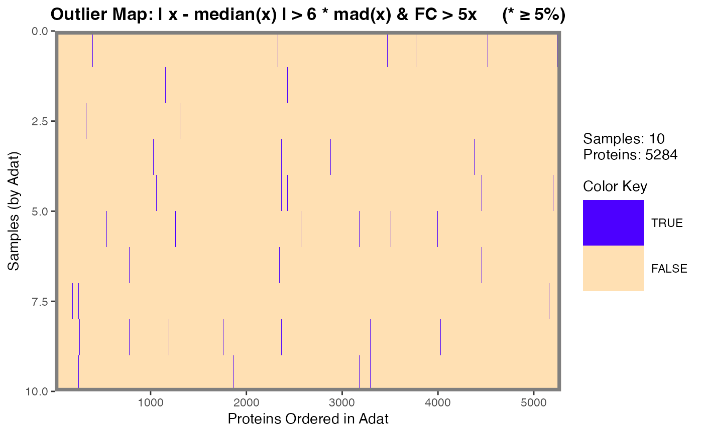

Plotting function for objects of the outlier_map class. Produces a
heatmap-style image using ggplot2 syntax, for objects
produced by calcOutlierMap().
Usage
# S3 method for class 'Map'
plot(
x,
color.scheme = NULL,
legend.ticks = 7,
gridlines = NULL,
gridlinecol = "red",
gridlinelwd = 0.5,
gridlinelty = 2,
main = NULL,
y.lab = NULL,
x.lab = NULL,
flags = NULL,
legend.width = 1,
legend.height = 2,
filename = NULL,
plot.width = 14,
plot.height = 8,
plot.scale = 1,
...
)Arguments
- x
An object of class:
outlier_map- color.scheme
Which color scheme to use. Typical choices include:
gplots::redgreen()gplots::bluered()viridis::viridis()viridis::magma()
- legend.ticks
How many ticks to place on the color legend.
- gridlines
Numeric vector or logical. Indicates where to draw the horizontal grid lines that can be used to separate samples (rows). This should be a vector of the cumulative sum of the horizontal lines to be drawn, typically something like
cumsum(table(data$Sex)). Alternatively,TRUEcan be passed whereby the lines are determined by the "class.tab" element ofx$class.tab(if possible).- gridlinecol
Color of the gridlines.
- gridlinelwd
Width of the gridlines.
- gridlinelty
Line type of the gridlines.
- main
Character. Main title for the plot. See
ggplot2::ggtitle()forggplot2style graphics.- y.lab
Character. Optional string for the y-axis. Otherwise one is automatically generated (default).
- x.lab
Character. Optional string for the x-axis. Otherwise one is automatically generated (default).
- flags
Numeric in
[0, 1]. For an"outlier_map", the proportion of the analytes (columns) for a given sample that must be outliers for a flag to be placed at the right-axis, right-axis, thus flagging that sample. IfNULL(default),0.05(5%) is selected.- legend.width
Width for the color legend.
- legend.height
Height for the color legend.
- filename
Optional. If provided, the plot will be written to a file. The file name must also include the desired file type extension; this will be used to determine the file type, e.g. a file named
foo.pngwill be saved as aPNG. Seeggplot2::ggsave()for a full list of file type (device) options.- plot.width
If
"filename != NULL", the width of the plot image file.- plot.height
If
"filename != NULL", the height of the plot image file.- plot.scale
If
"filename != NULL", the scale of the plot image file.- ...
Arguments required by the
plot()generic. Currently unused.
See also
ggplot2::ggplot(), ggplot2::geom_raster()
Other Calc Map:
calcOutlierMap(),
getOutlierIds()
Examples
example_data |>
dplyr::filter(SampleType == "Sample") |>
head(10) |>
calcOutlierMap() |>
plot(flags = 0.05)
#> → No observations were flagged at this flagging proportion: 0.05
